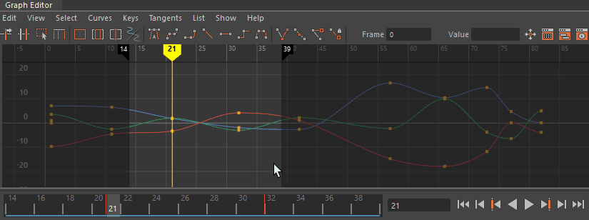
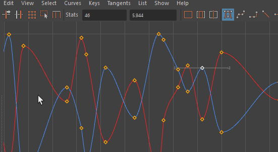
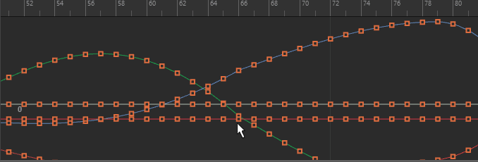
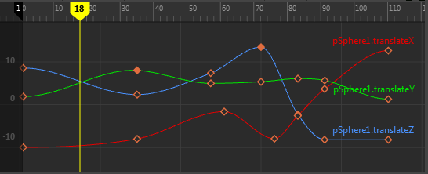
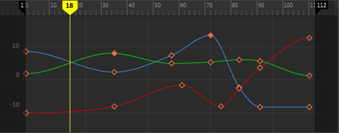
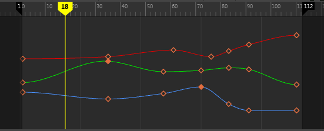
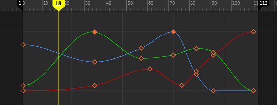
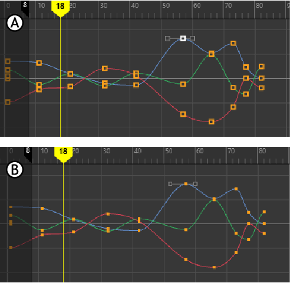
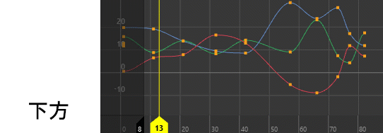
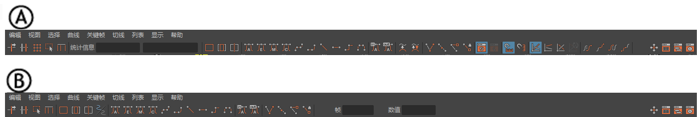

由于该菜单将控制可见的组件，因此它在“曲线图编辑器”(Graph Editor)的图表视图中可编辑。若要控制图表视图中显示的信息量，并指定哪些动画曲线组件可用于编辑，该菜单十分有用。
框显所需的范围之后，“曲线图编辑器”(Graph Editor)可在图表视图中沿水平或垂直方向伸缩该区域，以显示所需的范围。
- 撤消/重做视图更改(Undo/Redo View Change)
- 还原图表视图。
- 片段时间(Clip Time)
-
使用“片段时间”(Clip Time)，能够以片段动画在“Trax 编辑器”(Trax Editor)中的位置和比例来查看该曲线。
- 帧(Frame)
-
- 框选全部(Frame All)
-
调整图表视图，使其适配该窗口中的所有动画曲线。
- 框显当前选择(Frame Selection)
-
调整图表视图，使其适配在该窗口中选定的动画曲线或曲线分段。
- 框显播放范围(Frame Playback Range)
-
调整图表视图，使其适配该窗口中的播放范围。
- 居中当前时间(Center Current Time)
-
如果在“曲线图编辑器”(Graph Editor)中更改视图，并且需要偏移该视图，使当前时间位于该编辑器的中间，请从“视图”(View)菜单中选择“居中当前时间”(Center Current Time)。
- 自动框显(Auto Frame)
-
自动调整图表视图，使其在 Y（或值）轴上适配显示与一个或多个选定对象关联的动画曲线。
默认情况下，“自动框显”(Auto frame)处于活动状态。若要更改此默认设置，请在“动画”(Animation)首选项（在“设置”(Settings)下）的“曲线图编辑器”(Graph Editor)部分中禁用“自动框显”(Auto frame)。
- 自动框显时间(Auto Frame Time)
- 调整图表视图以使其在 X（或时间）轴上自动适配显示。仅当“自动框显”(Auto Frame)选项（如上所述）也处于活动状态时，此选项才可用，从而能够框显 X 轴 Y 轴。
-
默认情况下，“自动框显时间”(Auto Frame Time)处于禁用状态。若要更改此默认设置，请在“动画”(Animation)首选项（在“设置”(Settings)下）的“曲线图编辑器”(Graph Editor)部分中启用“自动框显两个轴”(Auto frame both axes)。
- 显示结果(Show Results)
-
当不创建动画曲线的动画类型（例如，运动路径和表达式）属于动画的一部分时，可以使用“显示结果”(Show Results)来查看这些动画类型的行为的图形表示。注：
若要编辑这些动画类型，则必须通过执行“烘焙通道”(Bake Channel)将其变换为动画曲线。
-
任何数值属性均可驱动“显示结果”(Show Results)。若要查看由单个动画曲线以外的任何事物驱动的动画，则该选项十分有用。选择“显示结果”(Show Results) >
 以打开并设置“显示结果选项”(Show Results Options)。
以打开并设置“显示结果选项”(Show Results Options)。
- 单击“视图 > 显示结果”(View > Show Results) > 以查看显示结果选项(Show Results Options)。
- 显示缓冲区曲线(Show Buffer Curves)
-
启用该选项时，将导致图表视图显示已编辑曲线的原始形状。在结束时选中该复选框将显示“显示缓冲区曲线选项”(Show Buffer Curve Options)窗口。
在颜色设置(Color Settings)中，自定义默认缓冲区曲线和缓冲区曲线关键帧颜色。
- 单击“视图 > 显示缓冲区曲线”(View > Show Buffer Curves) > 以查看显示缓冲区曲线选项(Show Buffer Curves Options)。
- 显示播放范围着色(Show Play Range Shades)
-
启用此选项后，可在“曲线图编辑器”(Graph Editor)中显示“播放范围着色”(Play Range Shades)。
-
提示： 可以在颜色设置(Color Settings)中更改“曲线图编辑器”(Graph Editor)的“播放范围着色”(Play Range Shade)的颜色和不透明度。另请参见曲线图编辑器颜色。有关详细信息，请参见“曲线图编辑器”(Graph Editor)图表视图主题中的“曲线图编辑器播放范围着色”。
- 锁定播放范围着色(Lock Play Range Shades)
- 启用此选项后，无法拖动“曲线图编辑器”(Graph Editor)的“播放范围着色”(Play Range Shades)。这样，在移动当前时间标记以拖动时间时，可防止意外移动“播放范围着色”(Play Range Shades)。此设置处于活动状态时，仍可使用范围滑块(Range slider)更改播放范围，但无法在“曲线图编辑器”(Graph Editor)中拖动“播放范围着色”(Play Range Shades)。
- 该设定默认处于禁用状态。
- 亮显受影响曲线(Highlight Affected Curves)
-
亮显受选定关键帧/切线影响的曲线分段。选择关键帧或切线时，受选定关键帧/切线影响的曲线部分将以白色亮显。
- 如果您：
- 选择一个关键帧：将亮显受影响曲线上关键帧的每一侧
- 选择多个关键帧：将亮显受选择影响的整个曲线范围
- 选择一条切线：将亮显受选定切线影响的曲线分段（在选定侧）
- 选择多条切线：仅亮显受选定切线影响的部分
- 该设定默认处于禁用状态。
- 主键(Keys)
-
使您可以设置关键帧的可见状态。
-
若要对动画曲线的组件进行操作，则必须将该组件加载到“曲线图编辑器”(Graph Editor)中使其可见。默认情况下，场景视图中选定的对象将自动加载至“曲线图编辑器”(Graph Editor)中。关键帧在图表视图中表示为橙色方形。选择之后，它们将以白色亮显。
在“首选项”(Preferences)菜单的颜色设置(Color Settings)中，自定义默认关键点颜色。
-
- 始终(Always)
-
将关键帧设定为在“曲线图编辑器”(Graph Editor)的图表视图中始终可见。
- 从不(Never)
-
在图表视图中隐藏关键帧。由于关键帧不可再用于拾取，因此不再能对其进行编辑。
- 仅活动视图(Active Only)
-
将关键帧设置为仅在选择与关键帧相关联的曲线时可用。
- 切线(Tangents)
-
使您可以设置切线的可见状态。（若要对切线的组件进行操作，则必须指定为可见使其可用。）
-
切线在图表视图中表示为与动画曲线的曲线分段相切的控制柄。选择之后，它们将以绿色亮显。注： 如果已为曲线分段启用“统一切线”(Unify Tangents)，则该关键帧两侧的控制柄将在编辑选定的控制柄时统一调整。如果“断开切线”(Break Tangent)已生效，则每个切线控制柄将彼此独立操作。
在“首选项”(Preferences)菜单的颜色设置(Color Settings)中，自定义默认切线颜色。
-
- 始终(Always)
-
如果将切线的可见状态设置为“始终”(Always)，则将导致切线在“曲线图编辑器”(Graph Editor)的图表视图中始终可见。注：
如果要对切线进行操作，且已在“曲线图编辑器”(Graph Editor)的“选择”(Select)菜单中禁用曲线和关键帧，请将切线的可见性设定为“始终”(Always)，以便它们可用于选择。
- 从不(Never)
-
如果将切线的可见状态设置为“从不”(Never)，则切线将隐藏在图表视图中。由于切线不可再用于拾取，因此不再能对其进行编辑。
- 活动关键帧上(On Active Keys)
-
如果切线的可见状态设定为“活动关键帧上”(On Active Keys)，则切线仅在选择其相关联的曲线或曲线分段时才可用。
- 无限(Infinity)
-
“无限”可启用或禁用显示已外推到动画曲线第一个关键帧和最后一个关键帧之外的动画曲线。
-
默认情况下，将恒定显示第一个关键帧之前以及最后一个关键帧之后的曲线。注： 自 Maya 2025.3 起，此选项默认处于启用状态。在早期版本中，“无限”(Infinity)选项默认处于禁用状态。
- 曲线名称(Curve Name)
- 用于在图表视图中显示/隐藏曲线的名称。

显示的曲线名称
-
- 始终(Always)
- 曲线名称始终显示。
- 从不(Never)
- 曲线名称始终隐藏。
- 仅活动视图(Active Only)
- 选择曲线之后显示曲线名称。
- 绝对视图(Absolute View)
-

- 启用后，图表视图显示相对于 0 的所有关键帧值。
- 按 1 键可激活“绝对视图”(Absolute View)。“绝对视图”(Absolute View)是默认视图。
注： 值行仅显示在“绝对视图”(Absolute View)中。“归一化视图”(Normalized View)或“堆叠视图”(Stacked View)中不显示任何值。有关值行设置，请参见“动画”(Animation)首选项（在“设置”(Settings)下）中的“引导线”(Guide Lines)区域。
- 堆叠视图(Stacked View)
-

-
注： 以前在 Maya 旧版曲线图编辑器中称为“堆叠的曲线”(Stacked Curves)。为了简化“堆叠视图”(Stacked View)，“泳道”无着色，垂直（时间）栅格线减少，并且时间值显示在图表顶部。
- 按 2 键可激活“堆叠视图”(Stacked View)。
-
启用时，图表视图将以堆叠形式显示单个曲线，而不是重叠显示所有曲线。当“堆叠视图”(Stacked View)处于活动状态时，每条曲线均会使用其自身的值轴显示。默认情况下，该值已归一化为 1 至 -1 之间的值。
注意：如果在“堆叠视图”(Stacked View)处于活动状态时使用“缩放关键帧工具”(Scale Keys Tool)或“晶格变形器关键帧工具”(Lattice Deformer Keys Tool)，则仅可修改时间值。
- 在“动画”(Animation)首选项（在“设置”(Settings)下）的曲线图编辑器设置中，您可以修改水平通道间距。
- 归一化视图(Normalized View)
-
注： 在“曲线图编辑器”(Graph Editor)中称为“显示已归一化”(Display Normalized)。
- 按 3 键可激活“归一化视图”(Normalized View)。
-
启用时，该选项将缩小较大的关键帧值或者放大较小的关键帧值，以适配 -1 到 1 的范围。动画曲线归一化之后，它们将会调整，以适配归一化的范围。
-
如果要查看、比较或编辑相关、但范围明显不同的动画曲线（例如，旋转曲线和平移曲线），则曲线归一化十分有用。例如，使用曲线化归一化，可以比较对象的所有平移和旋转动画曲线。
-
禁用“显示已归一化”(Display Normalized)时，曲线将还原为非归一化状态，还原为其原始范围。
注：与“曲线图编辑器”(Graph Editor)中的其他曲线相比，归一化的动画曲线显得更粗。
限制：曲线归一化不适用于以下曲线类型：
- 使用四元数旋转插值的旋转曲线
- 引用的动画曲线
- 锁定的动画曲线。
- 关键帧视图(Key View)
-
用于在默认“详细关键帧视图”(Detailed Key View) (A) 和“简化关键帧视图”(Simplified Key View) (B) 之间切换

关键帧视图(Key View)：A 详细，B 简化
-
- 详细关键帧视图(Detailed Key View)
- “详细关键帧视图”(Detailed Key View)是曲线图编辑器(Graph Editor)的默认视图，可提供关键帧和切线的视觉提示，例如显示填充关键帧或空心关键帧以表明关键帧是已编辑还是自动的，或者确定曲线类型。此反馈提供了一种快速方法来识别所处理动画的状态。
- 简化关键帧视图(Simplified Key View)
- “简化关键帧视图”(Simplified Key View)包含的关键帧上的视觉信息较少。
- 如果要简化视图以仅显示正在处理的关键帧或没有关键帧的曲线，请参见上述“关键帧”(Keys)并将设置更改为“活动”(Active)。
- 时间标尺放置(Time ruler Placement)
-
用于更改曲线图编辑器时间标尺的位置，以便可以将其与时间滑块(Time Slider)对齐。可以选择“顶”(Top)或“底”(Bottom)。
- 重新归一化(Renormalize)
-
仅当“显示已归一化”(Display Normalized)启用时才可用。选择该选项，可将图表视图中显示的曲线重新归一化。
注：当启用“显示已归一化”(Display Normalized)或者活动曲线列表更改时，曲线将自动重新归一化。
-
此外，通过在“曲线图编辑器”(Graph Editor)工具栏中选择“重新归一化”(Renormalize)图标 ，还可以将曲线快速重新归一化。
- 主题(Themes)
- 可用于选择各种预设主题，这些主题可以同时更改所选的“曲线图编辑器”(Graph Editor)颜色设置和视图设置。有关每个主题的详细信息，请参见“曲线图编辑器”(Graph Editor)主题和编辑和导出“曲线图编辑器”(Graph Editor)主题。
- 简单工具栏(Simple Toolbar)
-

“简单工具栏”(Simple Toolbar)可用于在默认 (A) 和简单 (B) 工具栏之间切换。
激活此选项后，可将默认“曲线图编辑器”(Graph Editor)工具栏（包含一组完整的曲线编辑和显示选项）切换到工具栏的简化版本（仅包含选定的编辑和显示选项）。